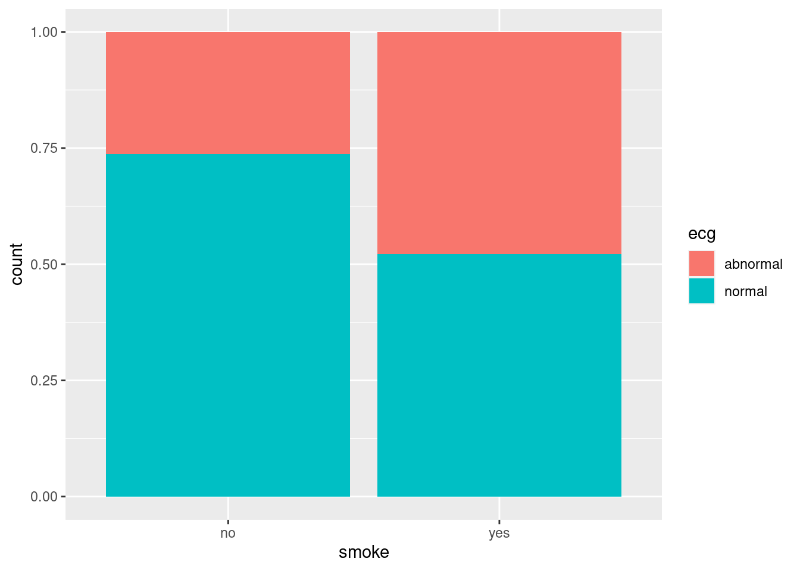
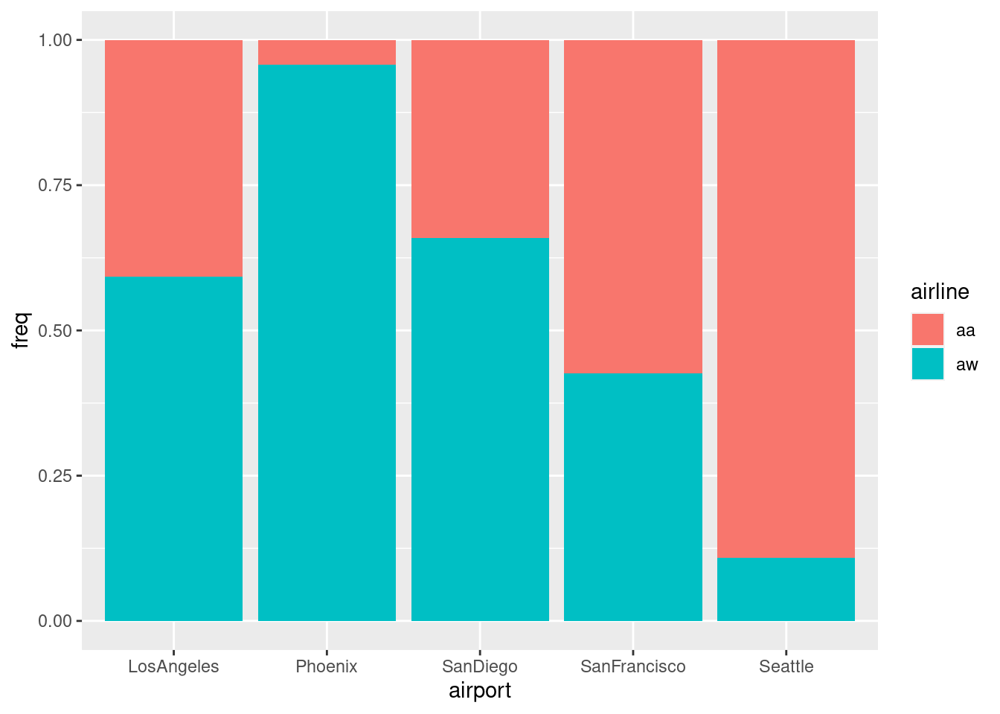

drop1 says what we can remove at this step. Significant = must stay.
Cannot remove anything.
Frequency depends on gender-eye wearcombination, cannot be simplified further.
Gender and eyewear are associated.
For modelling, stop here.
Making a graph
ggplot(eyes, aes(x = gender, y = frequency, fill = eyewear)) +geom_col(position ="fill")
Conclusions
Females are more likely to wear contacts than males are.
Females are less likely to wear glasses than males are.
The previous two comments are the reasons for the significant association.
Code comments 1/2
The code again:
ggplot(eyes, aes(x = gender, y = frequency, fill = eyewear)) +geom_col(position ="fill")
Variation on two-variable bar chart that we saw in C32.
Comparing (most easily) proportions, so fill clearer than dodge.
Each row of dataframe represents many people (the number in frequency), so use geom_col rather than geom_bar.
geom_col takes a y that should be the frequency.
Code comments 2/2
ggplot(eyes, aes(x = gender, y = frequency, fill = eyewear)) +geom_col(position ="fill")
Often in this work, one variable in association is explanatory rather than response. Have that as x (here gender); eyewear is response and goes in fill.
Interpretation: out of each category of explanatory (“out of females”), what proportion in each response category and where do they differ?
fewer glasses-wearers (eyewear effect) over both genders
no association (no interaction).
Graph shows no association
ggplot(eyes2, aes(x = gender, y = frequency, fill = eyewear)) +geom_col(position ="fill")
Chest pain, being overweight and being a smoker
In a hospital emergency department, 176 subjects who attended for acute chest pain took part in a study.
Each subject had a normal or abnormal electrocardiogram reading (ECG), were overweight (as judged by BMI) or not, and were a smoker or not.
How are these three variables related, or not?
The data
In modelling-friendly format:
ecg bmi smoke count
abnormal overweight yes 47
abnormal overweight no 10
abnormal normalweight yes 8
abnormal normalweight no 6
normal overweight yes 25
normal overweight no 15
normal normalweight yes 35
normal normalweight no 30
ecg:smoke has become significant. So we have to stop.
ecg is associated with both bmi and smoke, but separately (it doesn’t depend on the combination of bmi and smoke).
Understanding the final model
For each of the significant associations, make a bar chart (here, two-variable because two-way interactions)
Here, ecg is response (patients came into the study being smokers or overweight) so use as fill in both graphs.
y is the frequency column.
ecg:bmi
ggplot(chest, aes(x = bmi, y = count, fill = ecg)) +geom_col(position ="fill")
Comment
Most of the normal weight people had a normal ECG as well, but for the overweight people, a small majority had an abnormal ECG.
ecg:smoke
ggplot(chest, aes(x = smoke, y = count, fill = ecg)) +geom_col(position ="fill")

Comments
Most nonsmokers have a normal ECG, but smokers are about 50–50 normal and abnormal ECG.
Don’t look at smoke:bmi since not significant.
Simpson’s paradox: the airlines example
Alaska Airlines America West
Airport On time Delayed On time Delayed
Los Angeles 497 62 694 117
Phoenix 221 12 4840 415
San Diego 212 20 383 65
San Francisco 503 102 320 129
Seattle 1841 305 201 61
Total 3274 501 6438 787
Use status as variable name for “on time/delayed”.
Some tidying gets us the right layout, with frequencies all in one column and the airline and delayed/on time status separated out. This uses one of the fancy versions of pivot_longer:
Stop here, and draw graphs to understand significant results.
airline:status:
ggplot(punctual, aes(x = airline, y = freq, fill = status)) +geom_col(position ="fill")
Comments
We did this one before.
Slightly more of Alaska Airlines’ flights delayed overall.
airport:status:
ggplot(punctual, aes(x = airport, y = freq, fill = status)) +geom_col(position ="fill")
Comments
Flights into San Francisco (and maybe Seattle) are often late, and flights into Phoenix are usually on time.
Considerable variation among airports.
airport:airline:
ggplot(punctual, aes(x = airport, y = freq, fill = airline)) +geom_col(position ="fill")

Comments
What fraction of each airline’s flights are to each airport.
Most of Alaska Airlines’ flights to Seattle and San Francisco.
Most of America West’s flights to Phoenix.
The resolution
Most of America West’s flights to Phoenix, where it is easy to be on time.
Most of Alaska Airlines’ flights to San Francisco and Seattle, where it is difficult to be on time.
Overall comparison looks bad for Alaska because of this.
But, comparing like with like, if you compare each airline’s performance to the same airport, Alaska does better.
Aggregating over the very different airports was a (big) mistake: that was the cause of the Simpson’s paradox.
Alaska Airlines is more punctual when you do the proper comparison.
Ovarian cancer: a four-way table
Retrospective study of ovarian cancer done in 1973.
Information about 299 women operated on for ovarian cancer 10 years previously.
Recorded:
stage of cancer (early or advanced)
type of operation (radical or limited)
X-ray treatment received (yes or no)
10-year survival (yes or no)
Survival looks like response (suggests logistic regression).
Log-linear model finds any associations at all.
The data
after tidying:
stage operation xray survival freq
early radical no no 10
early radical no yes 41
early radical yes no 17
early radical yes yes 64
early limited no no 1
early limited no yes 13
early limited yes no 3
early limited yes yes 9
advanced radical no no 38
advanced radical no yes 6
advanced radical yes no 64
advanced radical yes yes 11
advanced limited no no 3
advanced limited no yes 1
advanced limited yes no 13
advanced limited yes yes 5
# A tibble: 6 × 5
stage operation xray survival freq
<chr> <chr> <chr> <chr> <dbl>
1 early radical no no 10
2 early radical no yes 41
3 early radical yes no 17
4 early radical yes yes 64
5 early limited no no 1
6 early limited no yes 13


Comments